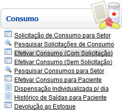
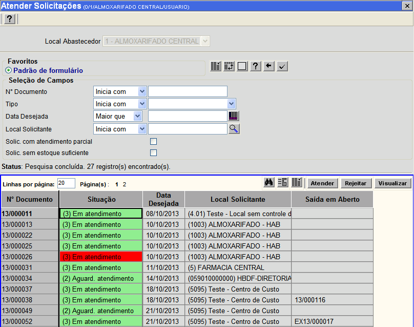
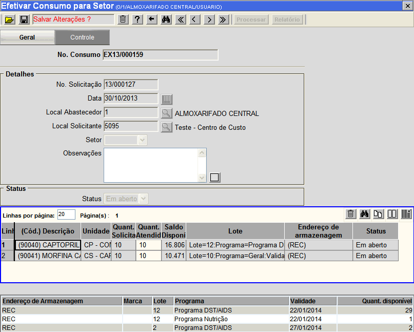
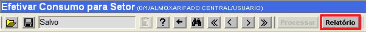
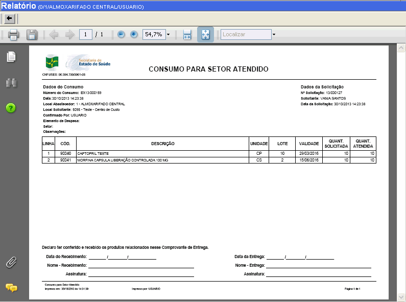

|
Efetivar Consumo (Com Solicitação) [ Voltar ]Esta tela permite que o usuário realize consumos por meio de solicitações.O formulário "Efetivar Consumo (Com Solicitação)" encontra-se dentro do menu "Consumo". 
Após clicar no formulário, o sistema abrirá a seguinte tela: 
Siga os passos abaixo para atender uma solicitação: 1º Passo: configure os filtros da pesquisa. Se necessário, configure os filtros da pesquisa para facilitar na localização da solicitação em questão. 2º Passo: selecione com um clique a solicitação desejada. Após selecionada cique no botão  [Atender], você será redirecionado para a tela "Efetivar Consumo para Setor". [Atender], você será redirecionado para a tela "Efetivar Consumo para Setor". 3° Passo: configurar a saída dos produtos. Nesta tela é necessário escolher o local de armazenagem dos produtos que irão serão utilizados para atender a solicitação.
Também é necessário especificar a quantidade de produtos que sairá de
cada local de armazenagem. Caso tenha alguma informação adicional,
preecha o campo Observações.
4° Passo: Depois de configurar a efetivação do consumo clique no botão  [Salvar]. Ao salvar, o botão [Salvar]. Ao salvar, o botão  [Processar] estará liberado, clique nele para processar a efetivação de consumo. [Processar] estará liberado, clique nele para processar a efetivação de consumo.5° Passo: Relatório. O botão  [Relatório] estará disponível após o processamento da efetivação de consumo (veja imagem abaixo). [Relatório] estará disponível após o processamento da efetivação de consumo (veja imagem abaixo). Clicando neste botão você será redirecionado para o relatório "CONSUMO PARA SETOR ATENDIDO", conforme imagem abaixo:  |